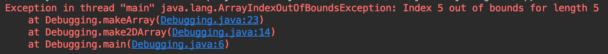
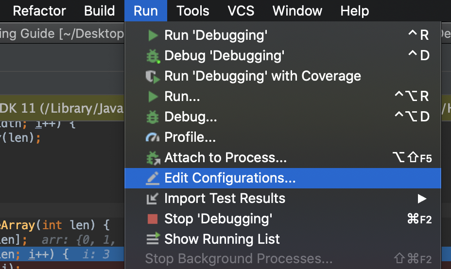
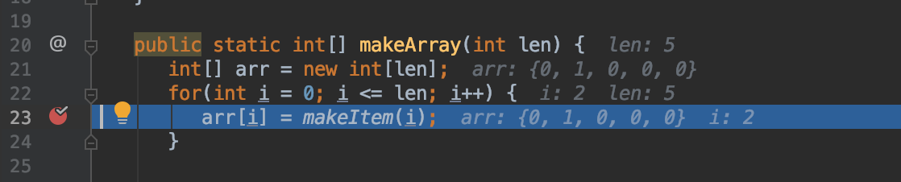
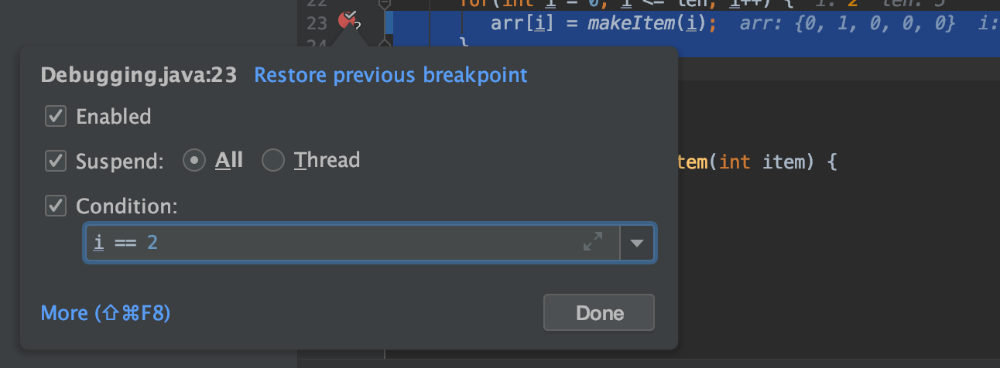
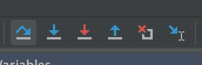
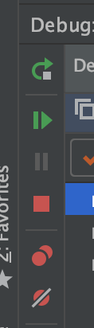
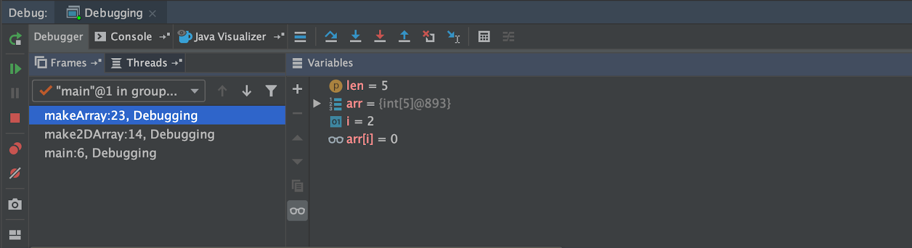
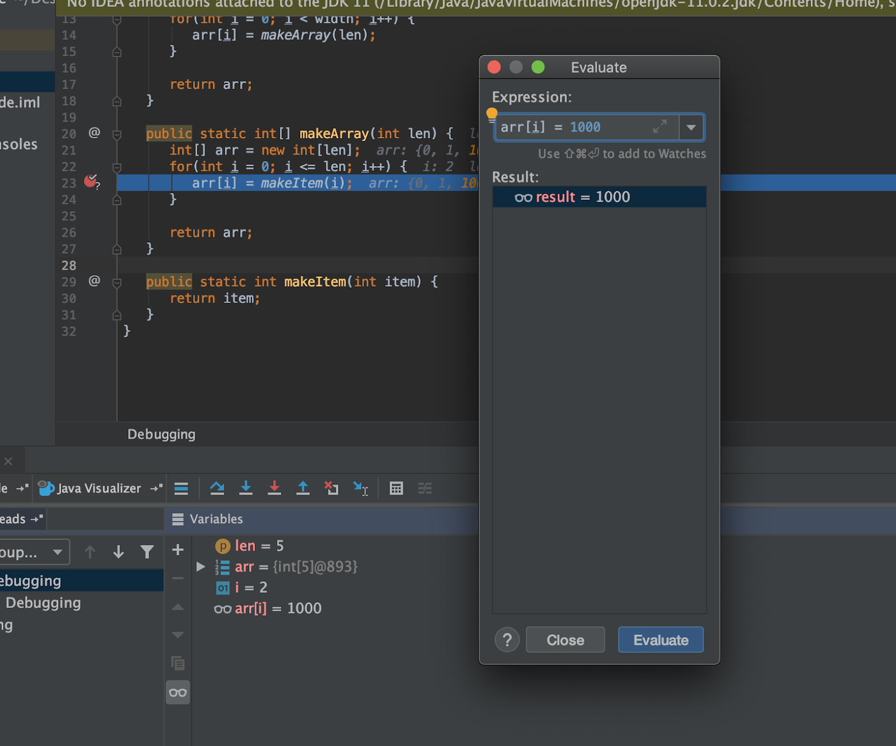
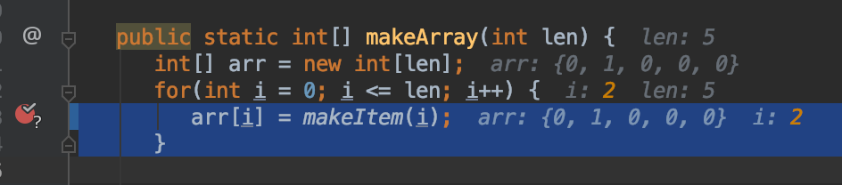

调试指南
A. 什么是调试？
当您编写大量代码时，就像您在这门课程中所做的那样，您会遇到各种类型的错误。其中一些错误（如语法错误）很容易 catch，因为编译器会准确地告诉您它们在哪里。不幸的是，代码逻辑中的错误就没那么简单了。它们不太可能被系统 catch，因为通常您的代码可以编译，只是返回了错误的值。IntelliJ（和大多数其他 IDE）提供了一系列工具，可以帮助您追踪代码并准确找出不一致发生的位置。
B. 为什么我应该学习调试？
调试能力是作为程序员非常重要的一部分——无论您多么聪明，如果您花了很长时间才找出代码哪里出问题了，那么完成项目也需要很长时间。每个程序员都需要知道如何有效地进行调试。在本课程的范围内，学会自己调试可以节省您在办公时间等待 TA 帮助的时间。考虑到这一点，这份速查表将为您提供调试各种类型错误所需的所有工具！
C. 我可以使用打印语句代替吗？
技术上，是的。有时候打印语句更有效，比如当您只需要在代码的相当孤立的部分中追踪一个变量时。您可以先使用打印语句进行调试，然后在 5 分钟后仍然努力寻找 bug 的情况下使用调试器。这里的警告是，如果您来到办公时间而没有逐步检查过您的代码，我们会将您指向本指南而不是为您查找 bug。
D. 理解堆栈跟踪

当您看到这样的异常时，这意味着您的计算机在运行程序时 catch 到了一个错误。为了提供帮助，在退出之前，它会告诉您所需的所有信息，以找出错误发生的位置。第一行遵循以下格式：
[哪个线程出错了] [发生了什么错误] [关于错误的更多信息]
我们关注的是最后两个部分。在这种情况下，看起来是这样的：
Exception in thread "main" java.lang.ArrayIndexOutOfBoundException: Index 5 out of bounds for length 5
这给了您两条信息：
-
该错误是一个 数组索引越界异常 。
-
我们试图访问一个长度为 5 的数组中的第 5 项。
这告诉您发生了什么，但不告诉您发生在哪里。这就是堆栈跟踪有用的地方。标题下的三行（或无论多少行）描述了计算机在代码中出错时的位置。顶部跟踪线是计算机在崩溃时正在执行的内容，列表描述了函数之间相互调用的相反顺序。在这里，我们看到我们的
main
函数在第 6 行调用了
make2DArray
。然后，
make2DArray
在第 14 行调用了
makeArray
。最后，代码在
makeArray
的第 23 行出错。点击蓝色链接会跳转到代码的该部分，因此您不必花时间滚动。知道这一点后，您可以开始调试导致错误的特定调用序列。
E. 这个错误是什么意思
也许您已经阅读了堆栈跟踪，但您不理解这个错误是什么意思。在大多数情况下，Java 错误的命名方式是即使没有先验知识也能理解的，但万一您遇到不认识的内容，这里有一份速查表：
| 错误 | 通常意味着什么 |
|---|---|
| ___ expected | 解析器无法理解这一行，因为有一个它不理解的字符或缺少一个字符。 |
| cannot find ___ | 您正在调用一个计算机无法访问的方法或类。 |
| Illegal start of expression | 您在这一行之前的某个地方缺少了一个右大括号。 |
| Illegal start of type | 您在函数体外写了不应该在那里的代码。 |
| Incompatible types – expected ___ | 您正在尝试将某些东西分配给一个类型不同的变量。 |
| Missing method body | 您的函数声明行有一个分号。 |
| Missing return statement | 您应该在这个方法中返回某些东西，但没有。 |
| Non-static method cannot be called from a static context | 您在类本身上调用了一个方法，而不是在类的一个实例上。 |
| *程序冻结* | 您可能陷入了某种逻辑循环。 |
F. 使用调试器逐步执行
通过 IntelliJ 运行代码

要使用调试器，您需要通过 IntelliJ 而不是控制台运行代码。
-
从主菜单，转到运行 > 编辑配置。
-
在与序参数字段中输入程序的任何参数。如果您要在控制台中运行，这就是您要传入命令行。
- 要运行调试器，请点击运行 > 调试，或右键点击
- 函数旁边的绿色箭头并选择调试。
设置断点
要检查代码在运行时的操作方式，我们设置 断点 。断点会在您设置的行暂停您的代码，这样您就可以看到错误发生位置周围所有变量的状态。要设置断点，请点击行号和代码之间的空间：

这种断点只会在您的计算机第一次遇到这一行时暂停代码。如果您遇到的情况是错误仅在变量设置为某个值时发生，您可以设置一个 条件断点 。

要做到这一点，请设置一个普通断点，然后右键点击出现的红色圆圈。现在，您可以在给定字段中设置断点条件。您的条件可以是任何在该点代码中能编译的 True/False 语句。这意味着您必须使用当前帧中已存在的变量，但它们不一定需要在当前行中引用。
逐步执行代码
顶部工具栏

要逐步执行代码，您需要了解调试视图顶部的工具栏。要查看它们的名称，请将鼠标悬停在图标上。从左到右，它们是：
| 按钮 | 它的作用 |
|---|---|
| 步骤 Over | 这允许您执行当前代码行并移动到该帧中的下一行。 |
| 步骤 Into | 这允许您进入当前行中任何函数调用，前提是这些函数是您自己的。 |
| Force 步骤 Into | 这允许您进入当前行中任何函数调用，即使它们来自某个第三方库。您不需要这样做。 |
| 步骤 Out | 如果您在函数或循环中，这允许您跳过帧的其余部分，从根本上将您带到调用此函数的地方。 |
| Drop Frame | 这允许您通过返回到调用它的上一个帧来重置当前帧。如果您错过了试图查看的函数部分，这很有用，因为这基本上可以让您回滚时间。 |
| Run to Cursor | 如果您在调试模式下运行，您可以通过点击运行到光标来快速跳转到代码中您感兴趣的区域。这将表现得好像在光标所在的任何位置设置了一个临时断点。 |
左侧工具栏

调试菜单的左侧还有第二个工具栏。此菜单用于更常规的操作。从上到下它们是：
| 按钮 | 它的作用 |
|---|---|
| Rerun | 使用与当前运行相同的设置重新运行调试器。 |
| Resume Program | 继续程序直到遇到下一个断点。 |
| Pause Program | 如果您的程序看起来要冻结了，请在无断点的情况下以调试模式运行它，然后在程序冻结时点击暂停。它最有可能在导致冻结的任何逻辑循环中暂停。 |
| Stop Program | 如果您完成调试了，可以点击此按钮提前结束程序。 |
| 查看 Breakpoints | 这会打开一个显示您所有当前断点的窗口。在这里，您可以编辑它们的设置并切换它们的开/关状态。 |
| Mute Breakpoints | 切换所有断点的开/关状态。 |
分析当前状态
在调试模式下，您可以通过两个地方获取有关程序状态的信息。
调试视图

首先，在调试视图中有两列：-
第一列显示到目前为止的堆栈跟踪。每一行描述一个帧，从最窄到最宽的顺序。帧的名称首先出现，指的是被调用的函数的名称。然后，我们看到该帧当前所在的行号。在这个例子中，
make2DArray在第 14 行调用了makeArray，所以它停留在该行直到makeArray完成运行。 -
第二列列出当前帧中的所有变量，包括任何全局变量。您看不到不在当前帧中的变量。在这里您可以看到它们在当前行上的值。
如果您想要的信息不仅仅是每个变量的值，工具栏中有一个叫做 计算表达式 的按钮。按下这允许您基本上即时地向程序插入行。

例如，在这里我们插入了表达式
arr[i] = 1000
并点击了
计算
，这反映在
结果面板
和
变量面板
中。从本质上讲，就好像我们在
arr[i] = makeItem(i)
之前插入了行
arr[i] = 1000
。此功能的一个很好的用途是通过计算 a == b 来确保代码中的两个对象相等（而不是同一类的两个实例），这仅从变量面板可能很难判断。这样做的好处是不会更改代码中的任何值，因此您不必担心意外修改您试图观察的行为。
代码视图
获取信息的第二个地方是在代码本身上。

在调试模式下，IntelliJ 会在每一行代码旁边的行显示该行中引用的每个变量的值。此外，它还会突出显示最近更改的任何变量的值。
G. 更多资源
如果您想了解更多关于使用 IntelliJ 调试器的详细信息，JetBrains 有一些指南：